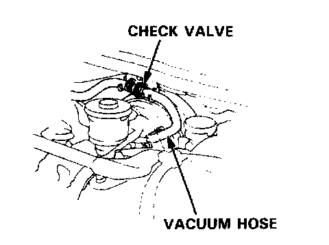

Check Valve Test

Booster Check Valve Test
1. Disconnect the brake booster vacuum hose at the booster or at the booster side of the valve.
2. Start the engine and let it idle. There should be vacuum. If no vacuum is available, the check valve is not working properly. Replace the check valve and retest.